an open research diary: can a tiny model learn to paint from text?
102M parameters361 strokes232k images~$65 of GPUs
01turning photos into strokes
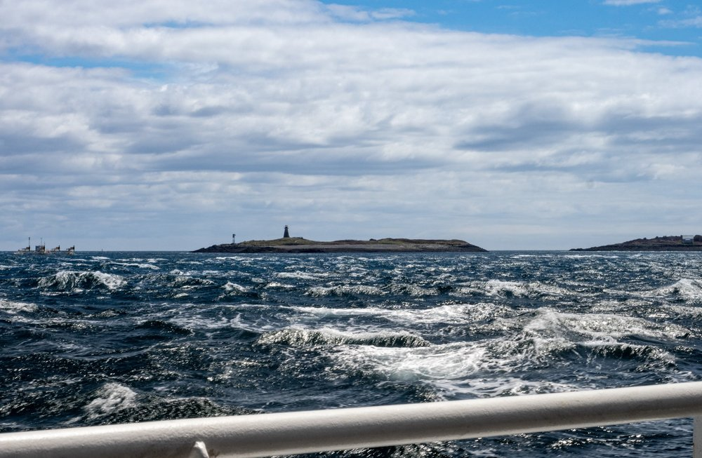
a real photo
its strokes, fitted by gradient descent
0
strokes
16 · coarse 4x4
+49 · 7x7
+100 · fine 10x10
+196 · detail 14x14
1 stroke = 11 numbersx0 y0x1 y1x2 y2widthr g bon / off
02reading the room
We read the papers first.
Everyone turns a photo into strokes. Nobody paints from a prompt with a tiny model.
03attempt one
Write strokes like words?
a small GPT, one number at a time · target on the left
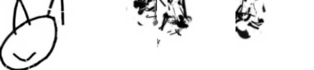
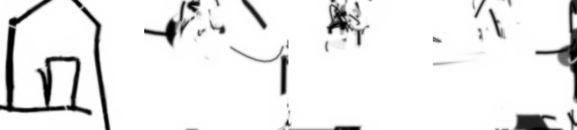
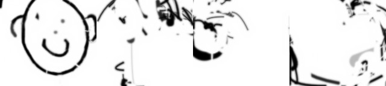
scribbles.
Fix: give every stroke a seat.
16 + 49 + 100 + 196 = 361
fixed slots · one direction per curve · an on/off bit
04two ways to paint
A · one stroke at a time
a causal transformer that watches its own canvas
B · all 361 at once
denoise the whole set together (set diffusion)
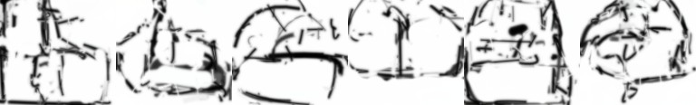
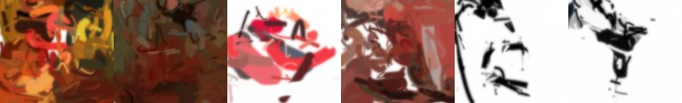
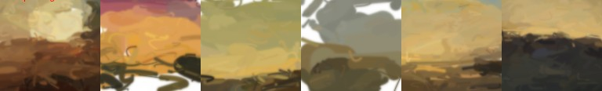
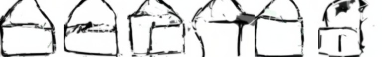
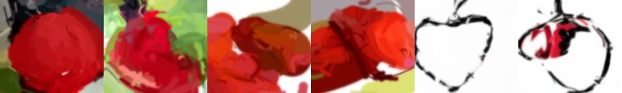
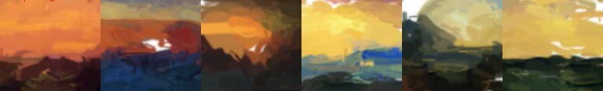
B wins. Every single time.
05what actually moved the needle
Every fix, measured on its own.
The cheap fixes beat the expensive ones. More steps did nothing.
06data: captions beat volume
Teach it with captions a painting can show.
PixelProse caption (Gemini)
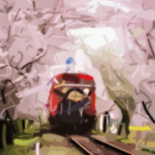
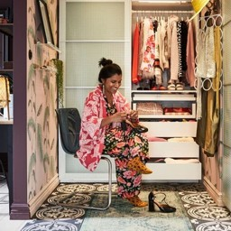
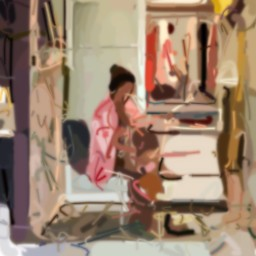
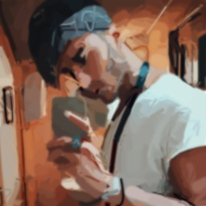
418,981 links → 309,512 painted → 232,134 kept
kept only if the strokes still match the caption
07train
8x
RTX 5090
~1 h
final run
0
pictures seen
102M
parameters
"a bird perched on a branch" · same prompt, same seed, more training
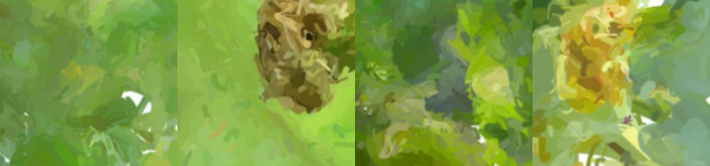
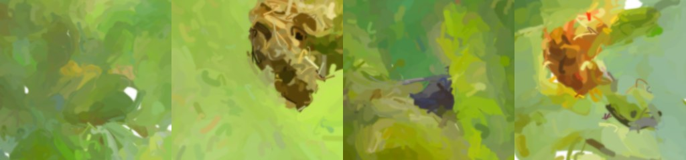
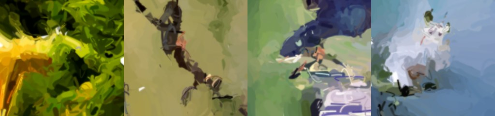
step 2,500
08results: unseen prompts
31%
picks its own caption out of 200 it never saw (chance: 0.5%)
97%
right colour on a fixed prompt benchmark
seen = unseen
same score on training and held-out captions: it generalises
09honest check
Next to a real image model?
Google MobileDiffusion
150,000,000 images
Piccaso-0.1
232,134 images · 650x less · ~$65 total
Early. Under-trained. The curves were still going up.
10what's next
Where this goes next.
few-step distillation: paint on a laptop in seconds 1M+ more PixelProse images 512 px finishing strokes + a cascade finisher opacity and soft brushes vector output all the way: every painting is an SVG
Thanks for watching.
weights · huggingface.co/shing-dev/Piccaso-0.1
code, notebook, paper · github.com/shing1Sks/piccaso
Piccaso-0.1 · early research preview · every stroke on screen was painted by the model or fitted by the pipeline